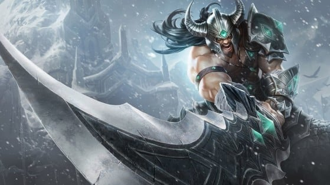
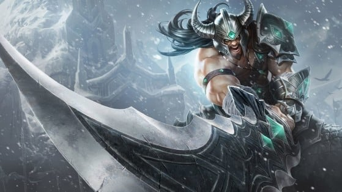
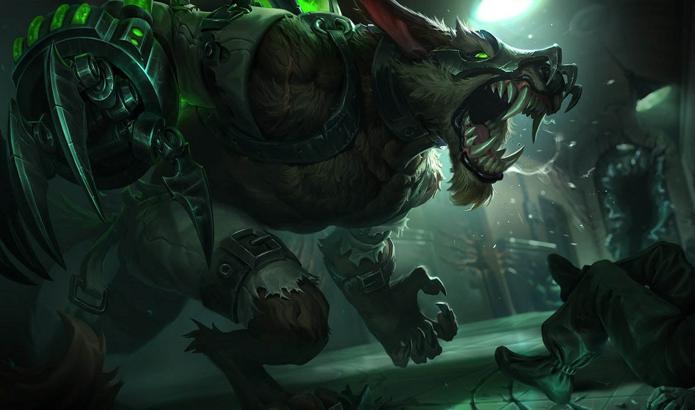
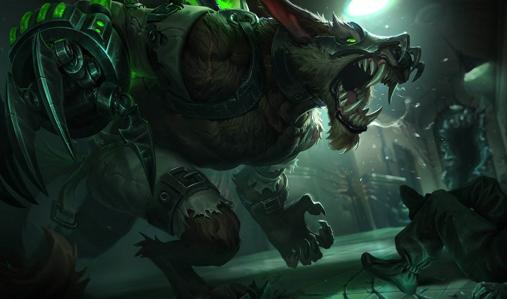
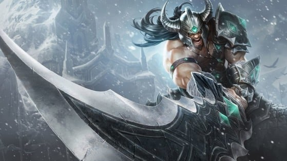
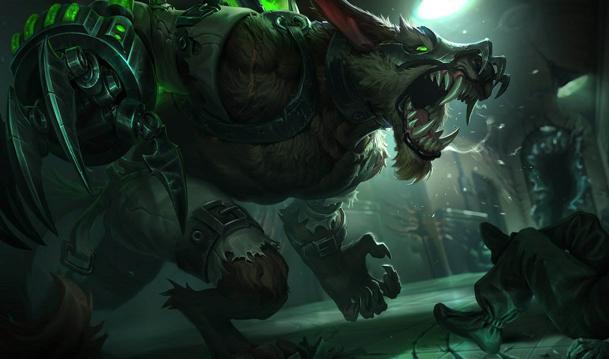

Campeones
Explora una gran variedad de campeones, cada uno con habilidades únicas y estilos de juego diferentes. ¡Encuentra el tuyo!
 

 


League of Legends es un juego de estrategia en equipo donde dos equipos de cinco poderosos campeones se enfrentan para destruir la base del otro.
Explora una gran variedad de campeones, cada uno con habilidades únicas y estilos de juego diferentes. ¡Encuentra el tuyo!


En League of Legends, cada jugador elige un rol y un carril específico. Aquí están los carriles principales del juego:
El carril superior es para campeones con gran resistencia y capacidad de pelea individual. Los campeones en esta línea suelen ser luchadores o tanques.
La línea central es frecuentemente ocupada por campeones con alto daño mágico o asesinos. La movilidad y el control del mapa son esenciales aquí.
En el carril inferior se encuentran el tirador y su apoyo. El tirador se encarga de hacer el daño mientras el apoyo ayuda en la supervivencia y control de la línea.
El jungla no tiene una línea fija. Se encarga de derrotar monstruos neutrales, apoyar en las líneas y tomar objetivos importantes como el dragón o el Barón Nashor.
El apoyo protege al tirador y ayuda en el control de visión en el mapa, asegurando la seguridad y el control del equipo sobre el campo de batalla.